SuperMap iTablet
使用帮助
一、 产品介绍
SuperMap iTablet（以下简称“iTablet”）是SuperMap iMobile在2018年推出的通用型移动GIS APP，具有地图风格配制、三维场景浏览、专题图制图、外业采集及云端数据实时共享等功能。我们针对地图制图、三维场景、专题制图、外业采集四个模块提供了不同的样例数据，用户可在初次打开iTablet的各模块时下载使用。
二、 地图制图
该模块提供地图风格配制功能。用户可点击【开始】-【打开地图】，打开需要配制风格的地图。
地图风格配制的三种方式：
1. 点击【风格】，选择想要修改风格的图层（若已设置当前图层，则可直接修改）。
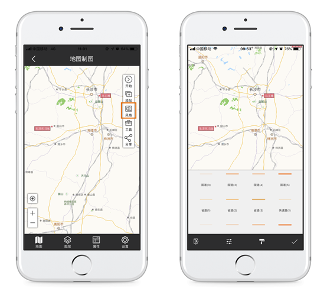
图1 点击【风格】进行设置
2. 点击【图层类型】图标，可修改该图层风格（该模块仅支持针对点、线、面、文本、CAD及栅格图层的风格进行设置）。
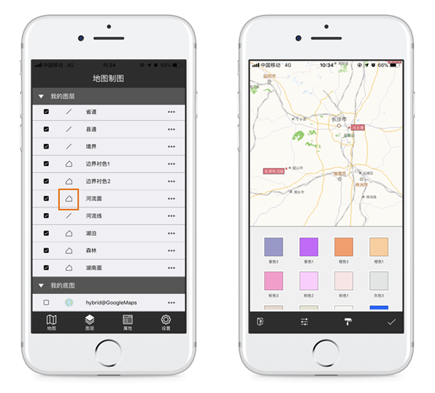
图2 点击图层类型进行设置
3. 点击图层【更多】图标，选择【图层风格】，可修改该图层风格。
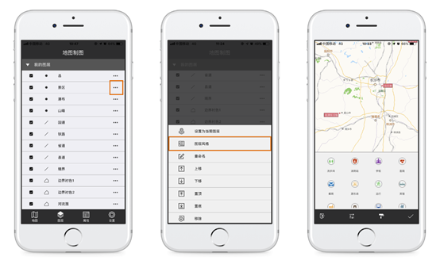
图3 点击【图层风格】进行设置
三、 三维场景
该模块提供三维场景浏览、飞行路线查看的功能。
基本手势操作：
1. 平移：按住屏幕上任意一点，向需要平移的方向移动。
2. 相机位置降低（抬升）：两个手指按住屏幕上任意两点，向下（上）方滑动。
3. 场景旋转：两个手指分别按住屏幕上下（左右）两点，分别向左右（上下）滑动。
4. 场景缩放：两个手指分别按住屏幕上任意两点，沿相对或相离的方向滑动。
飞行路线查看：
点击【飞行】，选择飞行轨迹，点击【开始飞行】，查看飞行轨迹。
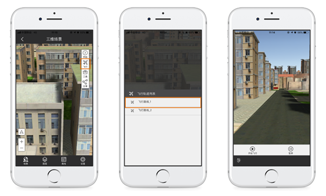
图4 查看飞行轨迹
四、 专题制图
该模块支持单值专题图、分段专题图、标签专题图及13种统计图的制作。
点击【专题图】，按照指引依次选择专题图类型、需要制作专题图的数据及表达式。可以对制作完成的专题图进行风格设置，设置方法同【地图制图】模块。
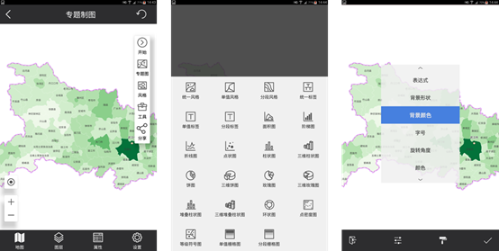
图5 专题图制作
五、 外业采集
该模块提供模板化制图，用户可以直接使用模板进行采集操作。
对象采集：
点击【采集】，选择绘制对象的符号，通过手指触碰屏幕并点击【提交】，完成一个对象的采集操作。点击，切换采集符号；点击，切换采集方式，支持点绘式、自由式、GPS轨迹式、GPS打点式。
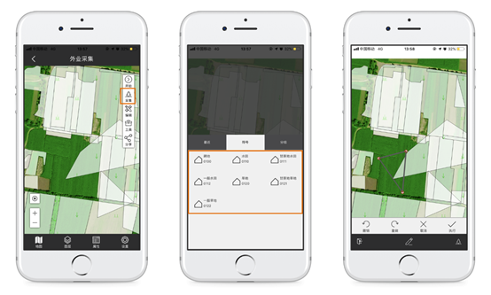
图6 对象采集
对象编辑：
点击【编辑】，单击需要编辑的对象，选择编辑类型，进行对象编辑，操作结束后点击【提交】完成编辑操作。
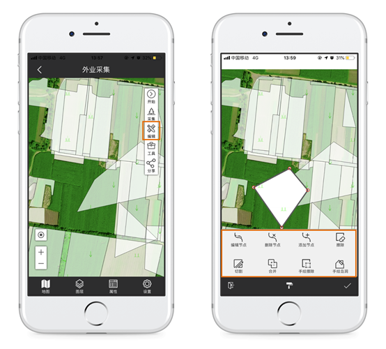
图7 对象编辑
六、 数据导入及导出
iTablet提供四种获取数据的方式：
1. 下载样例数据
初次下载iTablet并进入模块时，可以直接下载iTablet提供的样例数据。若未下载，之后可在【我的】-【导入】-【样例数据】中选择数据，并导入。
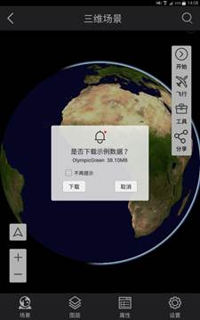
图8 下载样例数据
2. 复制数据到iTablet中
用户可以直接复制数据到移动设备中，并在【我的】-【导入】-【外部数据】中浏览并导入。
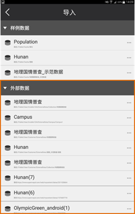
图9 外部拷贝数据
3. 【发现】中下载数据
在【发现】-【公共地图】中，用户可以在线浏览并下载已公开的数据。下载后的数据须在【我的】-【导入】-【外部数据】中导入。
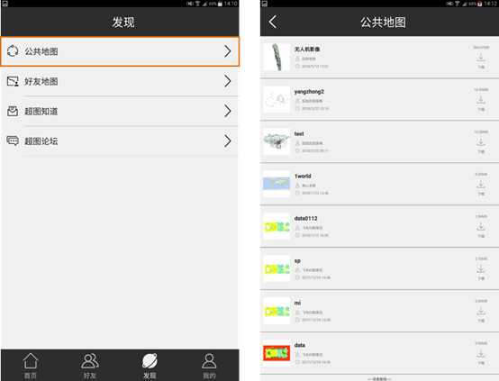
图10 下载公共数据
4. 登录Online账号，导入数据
iTablet目前已成功对接SuperMap Online（以下简称Online），可以通过登录Online账号，实现云端一体化、数据实时共享。Online中的数据可以在【我的】-【导入】-【外部数据】中浏览，点击【更多】图标，可以将该数据导入到iTablet中，或删除该数据。导入成功后，源数据中的地图、数据源、符号等会自动拆分到iTablet【我的】页面中的【地图】、【数据】、【符号】等列表中。
导出/上传数据：
1. 导出数据
打开【我的】-【地图】（或【数据】等），点击【更多】-【导出数据】，可将iTablet中的数据导出到该移动设备内。导出后的数据可在/iTablet/User/Customer（用户目录）/ExternalData中查看，导出的文件可直接复制到PC端使用。
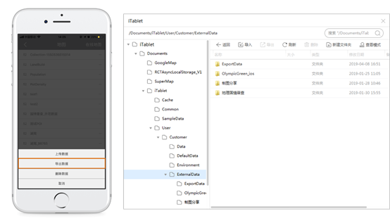
图11 导出数据
2. 上传数据
登录状态下，可通过打开【我的】-【地图】（或【数据】等），点击【更多】-【上传数据】，将iTablet中的数据同步到Online账号中。
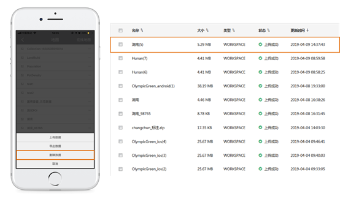
图12 上传数据
七、 常见问题
1. 如何制作一张简单的地图？
Ø 点击【开始】-【新建地图】，输入地图名称。
Ø 点击【添加】，选择需要添加到该地图的数据集。
Ø 点击【风格】进行风格设置。
Ø 在【图层】页面，点击某一图层后的【更多】按钮，可以对图层进行排序。
Ø 地图制作完成后，点击【开始】-【保存地图】。
Ø 保存后的地图可以在【我的】-【地图】中查看、上传、导出或删除。
2. 如何添加标注？
点击【工具】，选择标注类型，如【画线】、【文字】等。标注完成后可以添加属性信息。
3. 如何进行地图量算？
点击【工具】，选择量算类型，如【距离量算】、【方位角量算】
北京超图软件股份有限公司
2019年4月 北京